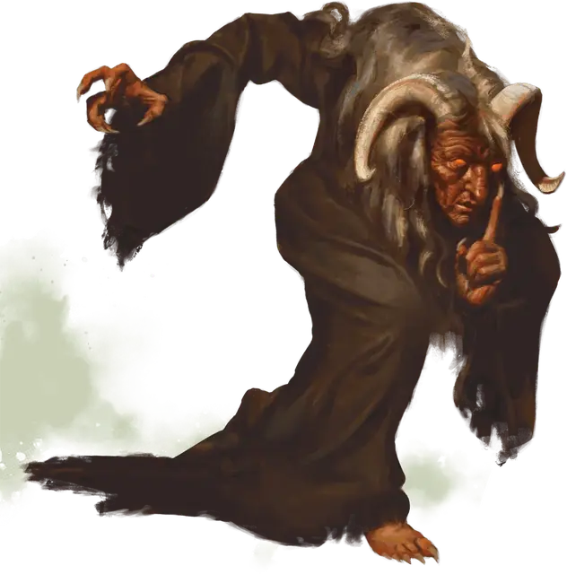

Сумеречная карга
Dusk Hag
Большая Фея, нейтрально-злая

Класс Доспеха 17 (природный доспех)
Хиты 82 (15к8 + 15)
Скорость 30 футов
| мод | спас | ||
|---|---|---|---|
| СИЛ | 11 | +0 | +0 |
| ЛОВ | 14 | +2 | +2 |
| ТЕЛ | 12 | +1 | +1 |
| мод | спас | ||
|---|---|---|---|
| ИНТ | 17 | +3 | +3 |
| МДР | 16 | +3 | +3 |
| ХАР | 18 | +4 | +4 |
Навыки Восприятие +6, Обман +7, Проницательность +6
Иммунитет к состояниям ослепление, очарование, испуг
Чувства слепое зрение 60 футов, пассивное Восприятие 16
Языки Общий, Великаний, Инфернальный
Опасность 6 (2300 опыта)
Бонус мастерства +3
Особенности
Сопротивление магии. Сумеречная карга совершает с преимуществом спасброски от заклинаний и прочих магических эффектов.
Врожденное колдовство. Базовой характеристикой врожденного колдовства карги является Харизма (Сл спасброска от заклинаний 15). Она может накладывать следующие заклинания:
• Неограниченно:обнаружение магии[detect magic], маскировка [disguise self].
• 3/день каждое: вещий сон[dream], гипнотический узор [hypnotic pattern], усыпление (9к8) [sleep].
• 1/день каждое: знание легенд[legend lore], наблюдение [scrying].
Пророчества. Предания говорят о могущественных волшебниках, безумных монархах и отчаянных героях, предпринимающих поиски или заключающих сделки с сумеречной каргой в обмен на её пророчества и видения будущего. Однако информация, полученная от сумеречной карги, часто приносит больше боли, чем радости. Как и все остальные, сумеречные карги любят затевать распри с теми, кто заключает с ними сделки, находя способы изворачивать и обращать все обещания в свою пользу. Ниже в таблице «Пророчества сумеречной карги» указаны примеры снов, которые карги могут разделить с ничего не подозревающими спящими.
Пророчества сумеречной карги.
| к10 | Пророчество |
| 1 | «Красная шляпа приближается с недобрыми намерениями. Опасайся.» |
| 2 | «Корабль плывет по морю костей, но сокровища ждут за серебряным черепом» |
| 3 | «Три дня, три смерти, три глаза, три вдоха.» |
| 4 | «Судьба обрушивается на павлина и воробья одинаково. Лучше быть вороном» |
| 5 | «Белая рука на чёрном поле держит золотой ключ.» |
| 6 | «Берегись чёрного коня.» |
| 7 | «Рыба-твой друг.» |
| 8 | «Лестница вниз ведет к тому, что ты ищешь.» |
| 9 | «Ищите два скрещенных меча. Там лежит ваша цель.» |
| 10 | «Если увидишь двух ворон, поворачивай назад. Иначе-смерть.» |
Действия
Мультиатака. Карга совершает две атаки кошмарными прикосновениями.
Когти. . Рукопашная атака оружием: +5 к попаданию, досягаемость 5 фт., одна цель. Попадание: 5 (1к6 + 2) рубящего урона.
Кошмарное прикосновение. Рукопашная атака заклинанием: +7 к попаданию, досягаемость 5 футов., одна цель. Попадание: 18 (4к6 + 4) урона психической энергией. Если цель находится без сознания, она дополнительно получает 10 (3к6) урона психической энергией и становится проклятой, пока ведьма не умрёт или проклятие не будет снято. Максимум хитов проклятого существа уменьшается на 5 (1к10) каждый раз, когда оно заканчивает продолжительный отдых.
Реакции
Пожирательница снов. Когда бессознательное существо, которое ведьма может видеть в пределах 30 футов от себя, приходит в сознание, карга заставляет существо совершить спасбросок Мудрости Сл 15. Если бросок провален, то существо получает 11 (2к10) урона психической энергией, а ведьма восстанавливает количество хитов, равное количеству урона полученного существом.
Описание
Сумеречные карги напоминают скрюченных ворон со сморщенной оранжевой кожей, спутанными седыми волосами и горящими, как раскаленные угли, глазами. Они видят будущее в своих снах, и их тёмная магия позволяет им влиять на сны других, посылая сообщения или вызывая кошмары прикосновением.